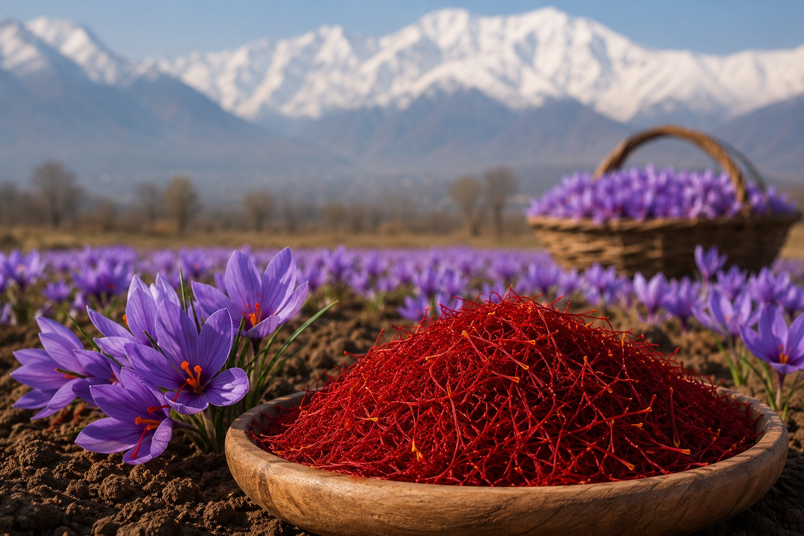
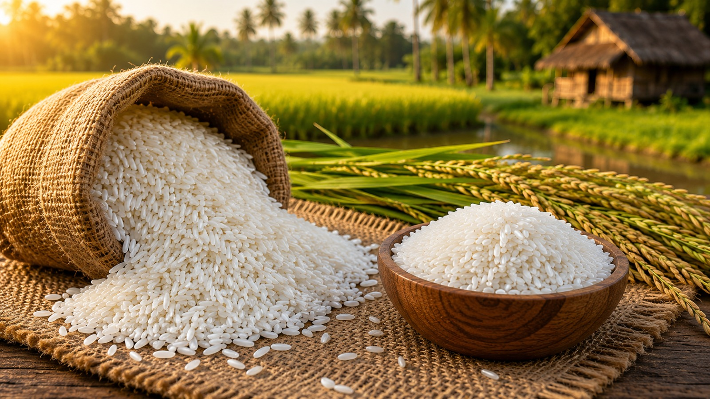

The Flavour Is Genuinely Different
Lakdong Turmeric has 7–12% curcumin. Regular turmeric has 2–3%. That is not a brand claim — it is soil science. The geography is the quality. You can taste the difference.
GI-certified ingredients from 29 Indian states. These are not just products. The land is part of the recipe.


A Geographical Indication tag — GI tag — is India's official government stamp that says: this product can ONLY come from this specific place, made by the people of that region, using their traditional methods. No imitation allowed. By law.
India has 635+ GI-tagged products. Most Indians have never heard of them. That is the problem we are fixing.
Before India became a market for imported flavours, this land grew everything. Saffron from Kashmir that Europeans called red gold. Turmeric from Meghalaya that healed before modern medicine existed. Pepper from the Kolli Hills that funded trade routes across three continents. Rice from Bengal that fed empires. Spices from Kerala that brought the world to our shores.
None of that went away. The farmers are still there. The soil is still producing. But most of what you are buying in the supermarket is an imitation — same name, different origin, different quality, and your money going somewhere else entirely.
Lakdong Turmeric has 7–12% curcumin. Regular turmeric has 2–3%. That is not a brand claim — it is soil science. The geography is the quality. You can taste the difference.
90% of "Kashmiri Saffron" sold online is Iranian or Spanish. With a GI-certified product, the law ensures it's genuine. No substitution. No adulteration. No guesswork.
Every GI product is sourced direct from the origin farming community. No mandi markup. No middleman. The farmer earns fairly. You get it fresher. India's agricultural heritage stays alive.
"Knowing where your food comes from is not a luxury. For a country with 635 GI-tagged products, it is the least we owe our farmers."
Each one from a specific district in India. Each one irreplaceable. Tell us which ones excite you most in the survey below — it only takes 60 seconds.